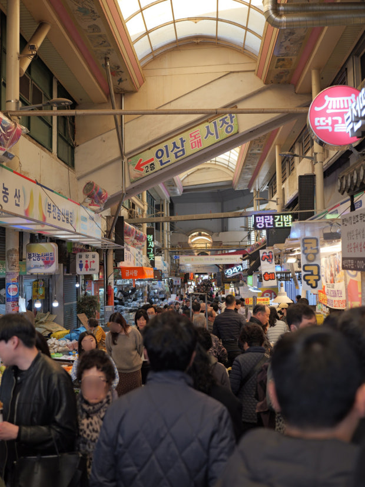
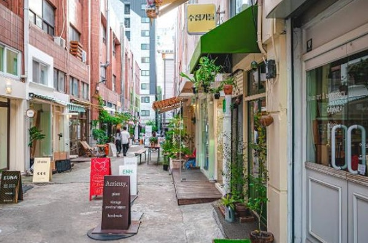

코로나 이후 사상 최고치를 갱신 중인 외국인 관광 수요. 특히 타이완/일본 관광객의 급성장에 주목합니다.
유튜브 댓글 분석 결과, 전포동/서면 등 부산 사람들의 '진짜 삶'을 보고 싶어 하는 니즈가 강력합니다.


부산의 사투리, 야경, 그리고 로컬의 에너지를 담았습니다.
유동 인구 전국 1위 서면과 맞닿은 전포동 카페거리. 부산 MZ세대의 진짜 트렌드를 체험합니다.
"보이소, 무보이소!" 부산 사투리를 배우며 직접 만들어보는 돼지국밥과 밀면 클래스.
광안대교를 바라보며 즐기는 로컬 수제 맥주와 회 포장 피크닉. 야경과 바다의 조화.